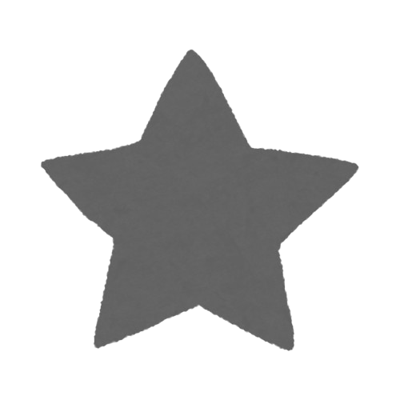

Étudiant - Développeur - 19 ans
Ewan François, étudiant à l'IUT Informatique d'Aix-En-Provence, en apprentissage constant du développement.
Je me passionne pour divers sujets, mais voici mes principaux loisirs que j'aime réaliser !
J'aime les jeux vidéo, pour plusieurs raisons, mais principalement, ceux qui peuvent offrir une belle morale, permettent de faire grandir notre imagination ou notre réflexion.

Je suis aussi passionné par les sciences, notamment par l'espace ; les étoiles ainsi que les planètes ou tout autre phénomènes cosmiques qui s'y produisent.
Je poursuis mes recherches scientifiques dans ce domaine afin d'en apprendre toujours plus.
J'ai également commencé à apprendre la modélisation 3D avec l'utilisation du logiciel Blender.
Enfin j'adore coder, cette passion rejoint ma soif d'imagination car avec du code, on peut créer ou du moins théoriser n'importe quel univers.
Je réalise donc des petits projets en C++, Python, PHP, HTML & CSS, Java pour à la fois améliorer mon niveau en programmation et me surpasser dans de nouveaux projets.
J'ai réalisé plusieurs projets, qu'ils soient au sein de l'IUT ou même hors de celui-ci.
Voici donc la liste de mes différents projets en cours ou terminés :
Lors de ma première année, nous avons réalisé diverses SAE (Projet en groupe durant une période limitée) :
Réalisation d'un programme en C++ suite à des attentes d'un client.
Réalisation d'un site Web optimisé et fonctionnel.
Analyses et explorations entre deux algorithmes sur des pages internet (algorithme PageRank).
Construction d'une base de données.
Développement d'une application pour un doctorant.
Installation et suivi d'un réseau.
Exploitation d'une base de données.
Gestion d'un projet.
Création d'un site web dynamique en PHP.
Tous ces projets ont été réalisés en groupe et chacun nécessitaient une bonne organisation ainsi qu'un bon travail en équipe.
J'ai également participé à :
Projets finis
Création d'un site web pour une photographe.
Réalisation de petits projets en Python (Rock-Paper-Scissor, calculatrice, jeu de dés).
Réalisation de petits projets en C++ (jeu du pendu, générateur de mot de passe).
Projets en cours
Réalisation de modèles 3D avec le logiciel Blender.
J'ai également commencé à m'intéresser au machine learning en démarrant la création d'une IA avec l'aide du logiciel Ollama.
L'astronomie étant une passion, j'ai commencé à créer différents simulateurs en Python avec les bibliothèques Pygame et NumPy.
Ma petite réussite
Proche de la fin de ma première année en BUT, nous avions un projet à réaliser où l'on devait créer une démo d'un jeu (une Game Jam).
Notre démo, "Aix-In-Mud", a remporté la première place de cette GameJam !
Si vous souhaitez me contacter, je suis disponible et j'essaierai de vous répondre au plus vite.
Mon discord : korenova0
Mon Instagram : korenova0